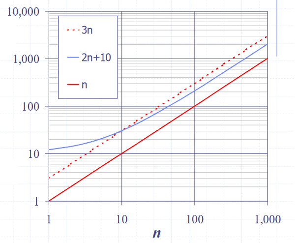
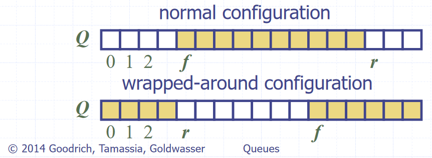
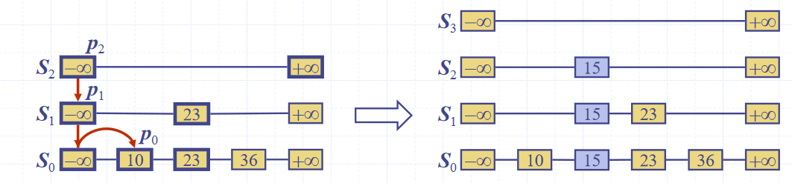
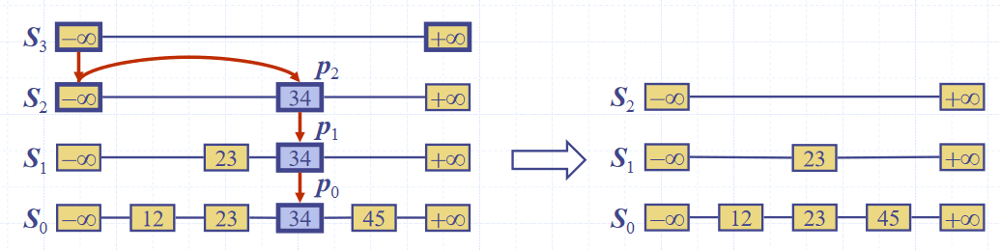

Arrays and Lists
Arrays (ADT)
Arrays are indexable, fixed length, sequence of variables of a single type (homogenous).
- They are homogenous as it is otherwise much harder to calculate the memory address of the data to look up given an index.
This table is an overview of the time complexity of certain operations for an array.
| Methods/Operations | Time | Reason |
|---|---|---|
get(i), set(i,e) |
O(1) | Indexable |
size() |
O(1) | Arrays are of fixed size when created, they know their size. |
isEmpty() |
O(n) | Has to check every index |
| Insertion, Deletion | O(n) | Fixed length – have to shift proceeding elements up or down to accommodate inserted/deleted element |
| Resizing the array | O(n) | Fixed length – have to create a larger array, then copy contents over. |
The operations in code blocks are the fundamental operations of arrays.
Implementation
Arrays can be concretely implemented by allocating a contiguous section of memory, with cells being indexable by memory location, as the data at an index can be found at
[S + D \cdot I]
where \(S\) is the pointer to the start of the array, \(D\) is the size of the data type, and \(I\) is the index.
Lists (ADT)
Lists are a finite sequence of ordered values, which may contain duplicates (more abstract than an array). A list is called homogenous if every element it contains is of the same type.
Array based implementation
Concrete implementation of lists
Arrays provide all the required properties, except being able to change size. To “grow” an array, we make a new array of a larger size, and copy all the data across to it.
To do this, we need to decide how large the new array should be. There are two strategies which are commonly used to do this:
- Incremental strategy – when the capacity is exceeded, grow it by a constant number of elements c
- Amortized (average) time of each push is Ω(n2)
- Space grows linearly, so quite space efficient
- Doubling strategy – when the capacity is exceeded, double it
- Amortized (average) time of each push is Ω(n)
- Space grows exponentially, so less space efficient
Array based implementations have the fundamental operations
- size()
- isEmpty()
- get(i)
- set(i,e)
- add(i,e)
- remove(i)
Positional lists (ADT)
Positional lists are a “general abstraction of a sequence of elements with the ability to identify the location of an element, without indices”
“Data Structures and Algorithms in Java”, Goodrich, Tamassia, Goldwasser
A “position” is a marker within the list, which is unaffected by changes elsewhere. For example, insertion or deletion of other elements doesn’t change it, the only time it changes is when it itself is deleted.
Fundamental operations
- addFirst(e)
- addLast(e)
- addBefore(p,e)
- addAfter(p,e)
- set(p,e)
- remove(p)
It is generally implemented as a doubly linked list.
Linked lists (ADT)
Linked lists are a collection of elements that can be accessed in a sequential way, meaning they are not indexable. Additional resource.
This means they can more easily implement non-homogenous lists, as opposed to using arrays, as cells can be of different “sizes”, so different data types requiring different amounts of data can be stored.
Singly linked lists
Concrete implementation of linked lists
Singly linked lists are a sequence of nodes, each of which stores both a value and a pointer to the next node in the sequence. There is a pointer to the first node in the sequence, and the final node in the sequence is a null pointer ∅
| Method/Operation | Time | Reason | Description |
|---|---|---|
set(p,e), addAfter(p,e), get, |
O(n) | Need to go through the list from head until index. |
addFirst(e) |
O(1) | Quick to add items to head because we have a pointer reference |
remove(p) (Deletion), Insertion |
O(n) | Similar to getting and set, but pointers are changed instead of values, either to bypass or include a new node in the sequence. |
Singly linked lists have the fundamental operations
-
addFirst(e)
-
addAfter(p,e)
-
set(p,e)
-
remove(p)
Doubly Linked Lists
Concrete implementation of positional lists and linked lists
Doubly linked lists are a sequence of nodes, each of which stores both a value and a pointer to both the next and the previous node in the sequence. At each end there are special header and trailer nodes, which are just references to the first and last nodes in the sequence
Similarly to singly linked lists, getting, setting, insertion, deletion all O(n) – need to iterate from start to end of the list to get to the position of the item.
Head and tail operations are O(1) – head and tail references (pointers) and the list can be traversed both forwards and backwards.
Fundamental operations (same as positional list as it is concrete implementation of it)
- addFirst(e)
- addLast(e)
- addBefore(p,e)
- addAfter(p,e)
- set(p,e)
- remove(p)
Analysis of algorithms
Running time
To assess how good an algorithm is, we often use the metric of running time compared with the size of the input to the algorithm.
- Worst case – which we focus on here, since it is both easy to analyse and useful
- Average Case – often more difficult to assess
- Best Case – often not sufficiently representative of the algorithm
Experimental trials
One of the ways to assess the running time is to write a program implementing the algorithm, then running for inputs of different sizes. Then fit curves to a plot of the results to try to classify the algorithm.
This has a few drawbacks though
- Need to implement the algorithm – might be difficult.
- Many ways to implement – reason for analysis is to decide which one to implement
- Not all inputs can be covered – not representative
- Dependent on machine hardware and software environments – difficult to equate between different tests, same specs and same environment needed.
Theoretical analysis
Theoretical analysis is given a high-level description of the algorithm (not a full implementation), expressing the running time as a function of the input size \(n\).
Pseudocode is used for this high-level description, which lies between English prose and program code. It has no formal syntax, and allows omission of some aspects of the implementation to make analysis easier.
This has the benefits of:
- Allowing all possible inputs to be covered
- Being independent of machine hardware and software environments, so easier to equate between different tests
Common functions of running time

Random Access Machine (RAM) model
To analyse programs, we use a simplified model of how computers work to help think about the time an high level operation takes to run by expressing it as fundamental operations which are equivocal to real computers.
In the RAM model, we consider a computer with:
- A single CPU executing a single program
- An arbitrarily large indexable array of memory
- A set of registers memory can be copied into
- Basic arithmetic and memory allocation operations
Generally, we tend to abstract beyond this model to just consider a set of primitive operations (usually single lines of pseudocode) that take constant time irrespective of input size in the RAM model.
We then analyse performance by counting the number of operations needed, as their number is proportional to running time.
This allows us to express the running time of the program as being between the best and worst cases of number of operations needed, multiplied their running time
- Let \(T(n)\) denote the running time, \(b(n)\) the best case, \(w(n)\) the worst case, and \(t\) the time taken for 1 primitive operation
- The running time is bounded as \(t \times b(n) \leq T(n) \leq t \times w(n)\)
- This metric of running time \(T(n)\) is not dependent on machine hardware or software environment – it is an intrinsic property of the algorithm.
Big-O Notation
Big-O is a way of quantifying the running time of an algorithm, allowing easy comparison. Given the functions \(f(n)\) and \(g(n)\), we say that \(f(n)\) is \(O(g(n))\) if:
\[\begin{align} &f(n) \leq g(n) \cdot c,& &\text{for all } n \geq n_0,& \\ && &\text{with some positive} \\ && &\text{constants } c \text{ and } n_0 \end{align}\]
Informally, this means that \(f(n)\) is “overtaken” by \(g(n)\) for all values above some threshold \(n _0\) usually we consider \(n \rightarrow \infty\), allowing scaling by a linear factor \(c\). This can be phrased as “\(f(n)\) is \(O(g(n))\) if \(g(n)\) grows as fast or faster than \(f(n)\) in the limit of \(n \rightarrow \infty\)” (Source)
Big-O notation, thus, gives an upper bound on the growth rate of a function as its input size n tends to infinity. Hence, \(f(n)\) is \(O(g(n))\) means that the growth rate of \(f(n)\) is no greater than that of the growth rate of \(g(n)\).
Big-O of a Function
Informally, the Big-O of a function is the term that grows the fastest, as it will come to dominate for a very large n, and we then just pick n0 where that term is dominating, and use c to shift the function to fit.
So, if \(f(n)\) is a polynomial of degree \(d\), then \(f(n)\) is \(O(n^d)\), as we can drop all but the fastest growing term.
When writing Big-O, we:
- Try to use the smallest possible class of functions which fulfils the criteria.
- E.g. O(n) not O(n2), whilst both technically are Big-O of linear functions. (Why is O(n2) valid for linear functions?)
- Use the simplest expression of the class.
- E.g. O(n) not O(5n).
Asymptotic Algorithm Analysis
Asymptotic algorithm analysis is a way we can take pseudocode and use it to find the Big-O of an algorithm.
- We first consider the worst-case number of primitive operations that the algorithm could require to run as a function of its input size.
- We then express this derived function in Big-O notation.
To prove something is \(O(f(n))\), we need to show that we can pick a \(c\) and an \(n\) which satisfy the condition. To prove something is not ,\(O(f(n))\) we show that there is no \(c\) for any arbitrarily large \(n_0\) which satisfies the condition.
An example, of this being formally calculated (taken from Data Structures and Algorithms in Java, Goodrich, Tamassia, Goldwasser) is shown below:
Consider the function \(2n + 10\). To show that it is \(O(n)\), we take:
\[\begin{align} 2n + 10 &\le c \cdot n \\ cn-2n &\ge 10 \\ n &\ge \frac{10}{c-2} \end{align}\]Hence, picking c = 3 and n0 = 10 the condition is satisfied.

Image source: Data Structures and Algorithms in Java, Goodrich, Tamassia, Goldwasser
Relatives of Big-O
There are other “relatives” of Big-O
- Big-O gives the upper bound
- \(f(n)\le g(n)\) in the limit of \(n\rightarrow \infty\)
- Big-Ω gives the lower bound
- \(f(n)\ge g(n)\) in the limit of \(n\rightarrow \infty\)
- Big-Θ gives “asymptotically tight” ≈ average
- \(f(n)= g(n)\) in the limit of \(n\rightarrow \infty\)
Recursive algorithms
Definition
Recursion can be defined in various ways:
“When a method calls itself”
– Data Structures and Algorithms in Java, Goodrich, Tamassia, Goldwasser
“A method which is expressed in terms of calls to simpler cases of itself, and a base case”
‚Äì CSRG, Edmund Goodman (It‚Äôs a recursive reference, get it?) üôÉ
Structure
Recursive functions tend to include two main components:
- Base cases
- Recursive calls
Base cases tend to be simple input values where the return value is a known constant, so no recursive calls are made. They are required for a recursive function to finish evaluating, so there must be at least one
Recursive calls are ones to the same recursive function making the call, with a simpler input (since it must “move towards” the base case for it to ever finish evaluating)
We can visualise recursion by drawing diagrams of functions, with functions as boxes and arrows indicating calls and return values. This is fairly self-explanatory.
Examples
We can often express many functions both iteratively and recursively, such as a binary search, which can be implemented recursively with:
- The input being a list,
- The recursive call being the half of the list the search has been narrowed down to
- The base cases being a single item, returning the index of that item if it is the item being searched for, or an indicator of absence if not
See the page on general algorithms for the pseudocode for a recursive binary search
Types of recursion
Linear recursion. Each functional call makes only one recursive call (there may be multiple different possible calls, but only one is selected), or none if it is a base case.
Binary and multiple recursion. Each functional call makes two or multiple recursive calls, unless it is a base case.
Stacks and Queues
Stacks (ADT)
Stacks are a “Last in, first out” (LIFO) data structure, with both insertions and deletions always occurring at the front of the stack.
These insertions and deletions are the fundamental operations of the stack, called pushing and popping respectively.
There is an edge case of popping from an empty stack, which normally either returns null or throws an error
Stacks have the fundamental operations:
- push(e)
- pop()
- size()
- isEmpty()
Array Based Implementation
Index of head stored, and incremented/decremented on pushing/popping operations
-
O(n) space complexity
-
O(1) time complexity of fundamental operations
Queues (ADT)
Queues are a “First in, first out” (FIFO) data structure, with insertions occurring at the rear and removals at the front of the queue.
These insertions and deletions are the fundamental operations of the stack, called enqueueing and dequeuing respectively.
There is an edge case of dequeuing from an empty queue, normally either returns null or throws an error
Queues have the fundamental operations
- enqueue(e)
- dequeue()
- size()
- isEmpty()
Array Based Implementation
Uses and array with data wrapping (so like using an array in a Queue class with extra fields/properties) around as it is added and removed. Both the index of the head f and the size of the queue s need to be stored.
The rear of the queue (index to insert to next) is (f + s) mod N, with N as the array size

Image source: Data Structures and Algorithms in Java, Goodrich, Tamassia, Goldwasser
- O(n) space complexity
- O(1) time complexity of fundamental operations
Maps, Hash tables and Sets
Maps (ADT)
Maps are a “searchable collection of key-value entries”
Data Structures and Algorithms in Java, Goodrich, Tamassia, Goldwasser.
They cannot contain duplicate keys, as then they would not be able to unambiguously look up values by their keys
Maps have the fundamental operations:
- contains(e)
- get(e)
- put(e)
- remove(e)
- size()
- isEmpty()
- sometimes additional operations for getting lists of all keys or all values
There are two common concrete implementations:
- List based implementation
- \(O(n)\) lookup and insertion, as the whole list needs to be iterated over to check for duplicates
- \(O(n)\) space complexity, as there are no duplicates
- Hash table based implementation
- \(O(1)\) lookup and insertion time, as they can be directly indexed
- \(O(k \cdot n)\) space complexity (still linear with number of items, but larger by a big constant factor)
Hash tables
Concrete implementation
Hash tables are a time efficient implementation of the Map abstract data type
To look up keys in \(O(1)\) time, we want essentially want to be able to index an array of them, but the space of keys are far too large to conceivably keep just one element in the array for each key.
Hash functions
We can use a “hash function” to reduce the size of the keyspace, so we can used the hashed outputs of keys for indices in the array storing the map. \(h : keys \rightarrow indices\) \(h\) maps keys of a given type to integers in a fixed interval \([0, N-1]\) where \(N\) is the size of the array to store the items in.
Modern implementations of hash functions are very complicated, and often involve two phases
- Mapping keys to integers with a hash code \(h_1\)
- Reducing the range of those integers with a compression function \(h_2\)
But simpler ones exist, for example \(h(x) = x \!\!\mod \!N\)
- We try to pick \(N\) such that there are fewer collisions – numbers like primes with few factors are better
Memory address
Java implements hash functions for all objects with the .hashCode() method, giving a convenient way to implement hashing.
The .hashCode() method is dependent on the memory address of the object storing the key, which is then cast to an integer. This then may be resized using a reduction function to map it to the correct size of the table may still be required.
Integer cast
Taking the bits encoding the object storing the key, and re-interpreting them as an integer. This is only suitable for keys of fewer or equal to the number of bits in the integer type (i.e. primitives: byte, short, int, float)
Component sum
The process is:
- Partition the bits of the key into a number of fixed length components (e.g. 8 bits)
- Sum together the components, discarding overflows
This is suitable for keys of a greater number of bits than the integer type (e.g. long and double)
Polynomial accumulation
The process is:
-
Partition the bits of the key into a number of fixed length components (e.g. 8 bits), and name them \(a_0, a_1, ..., a_{n-1}\) respectively
-
Evaluate the polynomial: \(p(z) = a_0 + a_1 \cdot z + a_2 \cdot z_2 + ... + a_{n-1} \cdot z^{n-1}\) at a fixed value \(z\), ignoring overflows
This can be evaluated quickly using Horner’s rule
This is especially suitable for strings, with \(z=33\) giving at most \(6\) collisions from \(50,000\) English words
Java hash implementations
Java implements hash functions for all objects with the .hashCode() method, giving a convenient way to implement hashing, but a reduction function to map it to the correct size of the table may still be required.
Additionally: “You must override hashCode() in every class that overrides equals(). Failure to do so will result in a violation of the general contract for Object.hashCode(), which will prevent your class from functioning properly in conjunction with all hash-based collections, including HashMap, HashSet, and Hashtable.” (Effective Java, Joshua Bloch)
Collisions
Collisions are when two different keys are mapped to the same index by the hash function. Since we cannot store duplicate keys unambiguously in a map, we need a protocol to resolve this.
Common approaches to this are
- Separate chaining
- Linear probing
- Double hashing
When colliding items are placed in different cells in the table, it is called “open addressing”, and when they are put in a separate data structure it is called closed addressing (with linear probing and separate chaining being examples of both respectively)
Separate Chaining
In separate chaining, each index in the array can contain a reference to a linked list.
- Whenever a key is mapped to that index, the key-value pair is added to the linked-list.
- If there are duplicates, we iterate over the chain till we find the key, or reach the end.
This has the drawback of requiring additional memory space for each linked list

Image source: Data Structures and Algorithms in Java, Goodrich, Tamassia, Goldwasser
Linear Probing
Linear probing handles collisions by placing the colliding item in the next available table cell, wrapping around if necessary.
Searching
As with the linked list, searching is done by iterating over the next cells, stopping when
- The item is found
- An empty cell in the table is found
- N cells have been unsuccessfully (cannot find key) probed.
// Psuedocode
Algorithm get(k)
i <- h(k) // h = hash function
p <- 0
repeat
c <- A[i] // A is the table
if c = empty
return null
else if c.getKey() = k // We found our item
return c.getValue()
else
i <- (i + 1) mod N // mod N takes care of wrap arounds
p <- p + 1
until p = N // stop if we have repeated N times
return null
This has the drawback of colliding items “lumping together”, which can cause many items needed to be iterated over in a probe.
Removing
To remove an item, we cannot just set it to null again, as that would mean it stops probing, even though there might be subsequent elements. Instead, we replace it with a DEFUNCT element, which is just skipped over when probing.
- Search for an entry with key k
- If k is found, we replace it with
DEFUNCTand we return the value of the item with key k - Else we return null
When colliding items are placed in different cells in the table, it is called open addressing, or closed hashing, and when they are put in a separate data structure it is called closed addressing, or separate chaining (with linear probing and separate chaining being examples of both respectively) additional link
Double Hashing
Double hashing handles collisions by re-hashing the key with a new hash function
If cell \(h(k)\) is occupied and not our key, we try \([h(k) + i \cdot f(k)] \!\!\mod \!N, \; i \in \mathbb{Z}\)
- \(h\) and \(f\) are hashing functions, and \(f(k)\) cannot have 0 values.
- \(N\) must be a prime to allow probing of all cells.
As before, there are many implementations of the hash function, but \(f(k)= q-k \!\!\mod\!q, \;s.t.\; q<N, q \in primes\) is normally used.
- If \(f(k) = 1\) then we have linear probing.
Searching is similar to linear probing, but when iterating we look at the hash value for \(i = 1,2,3,\ldots\) rather than just the next index in the table. This helps avoid the issue of colliding items “lumping together” as in linear probing.
Resizing a hash table
As with arrays, we create a new table of a larger size, then iterate over every index in the table, and apply the standard add operation to add it to the new one (re-hashing).
Again, similarly to arrays, the new size of the table can be picked from various algorithms, most commonly constant or exponential growth.
Performance of Hashing
The load factor of a hash table is the ratio of the number of items it contains to the capacity of the array \(\alpha = \frac{n}{N}\).
- If this approaches \(1\), the table becomes time inefficient to lookup in, so we often re-size the table whenever it exceeds a certain value, e.g. \(0.75\)
- If this approaches \(0\), then the table is mostly empty, so is space inefficient, so we try to avoid tables of less than a certain value, e.g. \(0.5\)
The time complexity of insertion and lookup is:
- \(\Theta(1)\) best case
- \(O(n)\) worst case – when all keys inserted into the map collide
- “Expected” number of probes with open addressing is \(\frac{1}{1-\alpha}\)
In practice, hash tables are a very efficient implementation of maps assuming the load factor is not very close to \(1\)
Experiments show that as long as \(\alpha \lt 0.9\), there should be no problem with speed. However, for \(\alpha \gt 0.9\) the number of collisions increase and becomes slower.
Sets (ADT)
Sets are “an unordered collection of elements, without duplicates that typically supports efficient membership tests.”
Data Structures and Algorithms in Java, Goodrich, Tamassia, Goldwasser
These are the same as sets in mathematics.
If you want to pull request more stuff here, please do - but I’m not too sure how much more depth is needed
| Fundamental Operations | Description |
|---|---|
add(e) |
Adds the element e to S (if not already present) |
remove(e) |
Removes the element e from S (if it is present). |
contains(e) |
Returns whether e is an element of S |
iterator() |
Returns an iterator of the elements of S |
union(s2) |
Updates S to also include all elements of set T. This effectively replaces S with S ∪ T |
intersection(s2) |
Replace/Update S with S ∩ T |
difference(s2) |
Replace/Update S with S – T (set minus) |
And alternate definition for set operations can instead define a third set structure and fill it with the result of S *set operation* T – this way we don’t alter S
- union(s1, s2)
- intersection(s1, s2)
- difference(s1, s2)
Implementations
There are two common concrete implementations. These are essentially the same as for maps, however, the key and the value are taken to be the same.
- Linked lists
- Hash set
List based
In the list implementation we store elements sorted according to some canonical ordering. This is important for the set operations to be more time efficient.
Generally, the space complexity is \(O(n)\), without overhead of empty cells. Since sets are not indexable, linked lists can be used, offering efficient re-sizing.
We need to iterate over each element in the list to lookup items, \(O(n)\) time complexity, which is not efficient, but for most more complex set operations, this becomes less of a drawback.
Generic Merging Algorithm
Set operations can be implemented using a generic merge algorithm.
Algorithm genericMerge(A,B)
S <- empty set // Set S to be an empty set
while !A.isEmpty() and !B.isEmpty() // until either 1 is empty
a <- A.first().element(); b <- B.first().element
if a < b
aIsLess(a, S); A.remove(A.first())
else if b < a
bIsLess(b, S); B.remove(B.first())
else // b == a
bothAreEqual(a, S)
A.remove(A.first()); B.remove(B.first())
// By this point either A is empty or B is empty
while !A.isEmpty() // populate S with remaining elements in A, if any
aIsLess(a, S); A.remove(A.first())
while !B.isEmpty() // Same for B as with A
bIsLess(b, S); B.remove(B.first())
return S
❕❗ This merging algorithm is used in merge sort as well! You may have noticed that we have 3 auxiliary methods in this algorithm: aIsLess, bIsLess, and bothAreEqual.
Depending on the set operation (or any operation you are using this generic merge for), you define these methods differently.
Example.
For set intersection – we only want the algorithm to merge when b == a, so aIsLess and bIsLess should do nothing and bothAreEqual should add either one into S.
Set union is trivial (just add everything).
For set subtraction you do nothing if the elements are equal!
This means that each set operation runs in linear time (i.e \(O(n_A + n_B)\) time), provided that the auxiliary methods run in O(1) time. This is possible, as we know that the elements are sorted.
Hash-set based
Hash-sets are implemented like a hash-table, but using only keys, not key-value pairs. This gives fast \(O(1)\) lookups, and an \(O(n)\) space complexity, but with large overheads.
Trees
Trees (ADT)
Trees are “an abstract model of a hierarchical structure. A tree consists of nodes with a parent-child relation.”
Data Structures and Algorithms in Java, Goodrich, Tamassia, Goldwasser
If you want to pull request more stuff here, please do - but I’m not too sure how much more depth is needed
| Fundamental Operation | Description |
|---|---|
size() |
Size of tree – number of nodes |
isEmpty() |
Returns true if the tree is empty. |
iterator() |
Iterator for the tree |
positions() |
Return an iterable container of all nodes in the tree |
root() |
Returns root node |
parent(p) |
Returns parent of node p |
children(p) |
Returns an iterable container of the children of node p |
numChildren(p) |
Returns the number of children of node p |
isInternal(p) |
Returns true if node p is an internal node (node with at least 1 child) |
isExternal(p) |
Returns true if node p is an external node (node with no children) |
isRoot(p) |
Returns true if node p is a root node (node without parent) |
The methods for insertion, deletion, and searching are more complicated, and so are outlined in more detail in the binary search tree section
Tree Traversals
There are various ways a tree can be traversed. Shown here is a figure of a binary tree.
In-order (Left, Root, Right). DBE A FCG
Pre-order (Root, Left, Right). A BDE CFG
Post-order (Left, Right, Root). DEB FGC A
Breadth First/Level Order. ABCDEFG
We will come back to breadth first traversal in a later topic (Breadth First Search). For now we will focus on the first 3.
In-Order Traversal
For every node, we print the left child, the node itself, then the right child. Since this is a recursive function, if we start at a node n, the algorithm will start from the left-most child of the tree, then that child’s parent then its sibling and on for the entire tree that the n is the root of.
Function inOrder(n)
if n != null
inOrder(n.leftChild())
Print n
inOrder(n.rightChild())
Note that the above algorithm applies only to binary trees, for a more general form of in-order traversal, there will need to be an additional definition of what makes a node a “left child”. This can either be that left child nodes have a smaller value than the parent/root, or left children are just the first m number of nodes etc.
Pre-order traversal
Each node is printed before its descendants, and descendants are taking in ascending order
Function preOrder(n)
if n != null
Print n
For each child m of n
preOrder(n)
Post-order traversal
Each node is printed after its descendants, and descendants are taking in ascending order
Function postOrder(n)
if n != null
For each child m of n
postOrder(n)
Print n
Binary trees (ADT)
Binary trees are a specialised tree where each node has at most two children, called left and right
| Fundamental Operations | Description |
|---|---|
left(p) |
Returns left child of node p |
right(p) |
Returns right child of node p |
sibling(p) |
Returns sibling of node p |
Properties
A binary tree with \(n\) nodes, \(e\) external nodes, \(i\) internal nodes, and a height \(h\) has the properties
- \[e = i + 1\]
- \[n = 2e - 1\]
- \[h \leq i\]
- \[h \leq \frac{(n-1)}{2}\]
- \[e \leq 2^h\]
- \[h \geq log_2 e\]
- \[h \geq log_2 (n+1) - 1\]
As mentioned earlier, Binary Trees by definition have a discrete middle node, and inherently support in-order traversal.
Implementations
There are two common concrete implementations of binary trees
- Linked structure
- Array based
Linked structure
In the linked structure implementation, each node is an object which stores its value, references to its child nodes (and sometimes a reference to its parent), as shown in the diagram below:

Image source: Data Structures and Algorithms in Java, Goodrich, Tamassia, Goldwasser
This has a linear space complexity irrespective of the balance of the tree, and has a lookup time of \(O(log_2n)\) for lookup operations.
Array based
In the array based implementation, node values are stored in an array, and their children can be found at indices based on arithmetic operations of their own index
- \[index(root) = 0\]
- If \(l\) is the left child of \(n\), then \(index(l) = 2 \cdot index(n) + 1\)
- If \(r\) is the right child of \(n\), then \(index(r) = 2 \cdot index(n) + 2\)
This can be very inefficient for unbalanced trees, for example, a tree which is just a “line” of nodes would grow with \(O(2^n)\) space, but it has a similarly good lookup time of \(O(log_2n)\)
Priority queues
Priority queues (ADT)
Priority queues are (unsurprisingly) similar to queues, but items are sorted in order of a property “priority”, the assigned priorities specify which element leaves first (is dequeued). Unlike maps, multiple elements can have the same priority.
These priorities, usually called keys, must form a total order relation, for example \(x \leq y\). We often use comparators on keys to form this total order relation.
| Fundamental Operations | Description |
|---|---|
enqueue(k,v) |
Insert an entry with key k and value v into the queue, where k determines its position in the queue. |
dequeue() |
Element with the highest priority is removed from the queue. |
size() |
Size of priority queue |
isEmpty() |
Returns true if priority queue is empty |
first() |
Returns the element with the highest priority – does not remove it. |
Note. The names of these operations/methods can differ, it is important to understand their function and purpose to draw the link with concrete implementations.
Implementations
There are three common concrete implementations:
- Unsorted list based
- Sorted list
- Heap based
For both list based implementations, a positional/linked list should be used (for unsorted, doubly linked is needed), since we want to be able to grow the list, but don’t need to be able to index it
Unsorted list based
To enqueue an item, we just add it to the end of the list, in \(O(1)\) time.
To dequeue an item, we have to traverse the entire list to find the smallest item, taking \(O(n)\) time
Sorted list based
To enqueue an item, we have to traverse the list to find where to put it, taking \(O(n)\) time (but we normally wouldn’t need to traverse the entire list, unlike dequeuing in the unsorted implementation, which also must)
To dequeue an item, we just take it from the front of the list, in \(O(1)\) time
Heap based
This is covered in the section on heaps
Comparators
Comparators are used to “encapsulate[…] the action of comparing two objects from a given total order”
Data Structures and Algorithms in Java, Goodrich, Tamassia, Goldwassers
The comparator is an object external to the keys being compared, not a property of the keys. See the 118 notes for a more full description.
In this context, comparators would be used to provide the total ordering on objects inserted to the priority queue.
Sorting with list based priority queues
We can sort a set of items by enqueueing them one by one, using the priority as the total ordering to sort by, and then dequeuing them into a list will result in them being sorted.
When the unsorted concrete implementation is used, this encodes “selection sort”. The steps taken in the sort are:
- Enqueue all \(n\) elements, each taking \(O(1)\) time into the priority queue, taking \(O(n)\) time
- Dequeue all the elements into sorted order, with the total calls taking \(O(n) + O(n-1) + ... + O(1)\) which is \(O(n^2)\) time. Hence, the total time complexity is \(O(n^2)\)
When the sorted concrete implementation is used, this encodes “insertion sort”. The steps taken in the sort are:
- Enqueue \(n\) elements, with the total calls taking \(O(1) + O(2) + ... + O(n)\), which is \(O(n^2)\) time
- Dequeue all \(n\) items, each taking \(O(1)\), taking \(O(n)\) time. Hence, the total time complexity is \(O(n^2)\)
Heaps
Heaps (ADT)
Heaps are essentially binary trees storing keys at their nodes and satisfying a set of “heap properties”.
As such, they are implemented in the same way as binary trees, discussed earlier, but with modified internal behaviour when inserting and deleting elements
Heap properties
The properties a binary tree must fulfil to be a heap are:
Heap-order. For every internal node other than the root (as it has no parent), the value of the node is greater than the value of the parent node
Complete binary tree. The height of the tree is minimal for the number of the nodes it contains, and is filled from “left to right”. This is formally defined as:
Let \(h\) be the height of the heap
​ Every layer of height \(i\) other than the lowest layer (\(i = h-1\)) has \(2^i\) nodes
​ In the lowest layer, the all internal nodes are to the left of external nodes
The last node of the heap is the rightmost node of maximum depth

Image source: Data Structures and Algorithms in Java, Goodrich, Tamassia, Goldwasser
Height of a Heap
A heap storing n keys has height = log2n.
Proof. Let \(h\) be the height of a heap storing \(n\) keys
Since there are \(2^i\) keys at depth \(i = 0, \ldots, h - 1\) and at least 1 key at depth \(h\), we have \(n \ge 1 +2 +4+\ldots+2^{h-1} + 1\)
Thus, \(n \ge 2^h \Rightarrow h \le log_{2}\ n\).
Heap methods
Inserting into a heap
First, the element is inserted to its temporary position of the rightmost node of maximum depth, so that it fills from left to right, with a running time of \(O(1)\) time, if a pointer to the position to insert is maintained

Image source: Data Structures and Algorithms in Java, Goodrich, Tamassia, Goldwasser
Then, the upheap algorithm is run to re-order the heap so that it fulfils the heap properties. This algorithm repeatedly swaps the inserted node with its parent, until either it reaches the root node, or it is larger than the parent node:
Let k <- the element to insert
While k is smaller than its parent, and k is not the root node
Swap the values of k and its parent node

Image source: Data Structures and Algorithms in Java, Goodrich, Tamassia, Goldwasser
Since the heap has a height of \(O(log_2\ n)\), performing a swap takes \(O(1)\) time, and the maximum number of swaps is the height of the heap, the upheap algorithm takes \(O(log_2\ n)\), time. In total, insertion takes \(O(log_2\ n)\) time.
Removal from a heap
The smallest item in the heap is the root node, so this value is stored and returned. However, we need to maintain heap properties as it is overwritten.
First, the value of the root node is overwritten with the value of the last node, and the last node is removed from the tree:
Image source: Data Structures and Algorithms in Java, Goodrich, Tamassia, Goldwasser
Then the downheap algorithm is run to re-order the heap so that it fulfils the heap properties:
Let p <- the root node
Let c <- the child of p with the minimal key (right if existent, otherwise left)
If the value of p is less than or equal to the value of c
Stop, since the heap order property is fulfilled
Else
Swap the values of p and c
Run the downheap algorithm again with the root node (p) now as the child node (c)

Image source: Data Structures and Algorithms in Java, Goodrich, Tamassia, Goldwasser
As with upheap, since the heap has a height of \(O(log_2\ n)\), the downheap algorithm takes \(O(log_2\ n)\) time.
Use in sorting
Since the heap can be used to implement priority queues, it can be used for sorting as with list based implementations, which resulted in selection and insertion sort. This is called a heap sort.
The steps taken in heap sort are:
- Enqueue \(n\) elements, with each enqueueing taking \(O(log n)\) time, so the total time is \(O(n \cdot log n)\) time
- Dequeue all \(n\) items, with each Dequeuing taking \(O(log n)\) time, so the total time is \(O(n \cdot log n)\) time
Hence, the overall time complexity is \(O(n \cdot log n)\)
This is one of the fastest classes of sorting algorithm, and is much more efficient than quadratic sorting algorithms like insertion or selection sort.
Concrete implementations
Any tree implementation can be used for a heap, as it merely modifies the way getters and setters work, not the internal data structures.
The main draw-back of array based implementations of space inefficiency for unbalanced trees is a non-issue for heaps, as they are implicitly balanced, so they are often used.
Skip Lists
Motivations for skip lists
We want to be able to efficiently implement both searching, and insertion and deletion
For fast searching, we need the list to be sorted, and we have come across two concrete implementations of lists, but neither of which fulfil both of these goals.
- Sorted arrays
- Easy to search using binary search, since they are not indexable, needs \(O(log\ n)\) time
- Difficult insert/delete from, as elements need to be “shuffled up” to maintain ordering, needs \(O(n)\) time
- Sorted lists
- Easy to insert/delete from, assuming the position is known, needs \(O(1)\) time
- Difficult to search, since they are not indexable, needs \(O(n)\) time
Skip Lists (ADT)
Skip lists are composed from a number of sub-lists, which act as layers within them, which we denote by the set \(S = \{S_0, S_1, ..., S_h\}\) where \(h\) denotes the number of layers in the list, i.e. its “height”
-
All lists have a guard values \(+ \infty\) and \(- \infty\) at either end, and all the elements are in order between those values
-
The “bottom” list, \(S_0\) contains all the values in order between the guards
-
The “top” list, \(S_h\), contains only the guard values, \(+ \infty\) and \(- \infty\)
-
Each list \(S_i\) for \(0 < i < h\) (i.e. everything bar the top list, which contains only the guards, and the bottom list, which contains all elements) contains a random subset of the elements in the list below it, \(S_1\)
-
The probability of an element in \(S_i\) being in the list above it, \(S_{i+1}\), is \(0.5\)
A diagram of the structure of a skip list is shown below

Image source: Data Structures and Algorithms in Java, Goodrich, Tamassia, Goldwasser
Searching
To search for an value v​ in a skip list, we follow the algorithm
Algorithm search(k):
p <- skiplist.first() // this is the minus-infinity guard of the top list
Repeat
e <- p.next().element()
if e.key() == k
return e
else if e.key() > k // next element is greater than v
p <- p.below() // Drop Down Step
if p == null then return null
else // next element's key is smaller than v
p <- p.next() // Scan Forward Step

Image source: Data Structures and Algorithms in Java, Goodrich, Tamassia, Goldwasser
Inserting
To insert a value v​ into a skip list, we follow the algorithm.
i <- number of flips of a fair coin before a head comes up
If i >= height of skip list
Add new, empty, sub-lists {S(h+1), ..., S(i+1)} to S
Using the search algorithm, we find v //even though we know it is not inserted
For every dropdown step, store the position of the element in an array
// This array stores the positions p(0) to p(i) of the
// largest element lesser than v of each sublist S(j)
For each sublist from 0 to i
Insert v into S(j) immediately after the position p(j) in array

Image source: Data Structures and Algorithms in Java, Goodrich, Tamassia, Goldwasser
Deleting
To delete a value v​ from a skip list, we follow the algorithm
Using search algorithm, find v in skiplist
Once found at position p,
while p.below() != null
hold <- p
delete(p) // Delete v from sublists below
p <- hold
Remove all but one list containing only guards from the top of the skip list

Image source: Data Structures and Algorithms in Java, Goodrich, Tamassia, Goldwasser
Implementation
We can use “quad-nodes”, which are similar to those used in linked lists, but with four pointers, instead of just one to store the entry, and links to the previous, next, below and above nodes:

Image source: Data Structures and Algorithms in Java, Goodrich, Tamassia, Goldwasser
Additionally, there are special guard nodes, with the values \(+ \infty\) and \(- \infty\), and fewer pointers, as they don’t have adjacencies on one side.
Performance
Space usage
Dependent on randomly generated numbers for how many elements are in high layers, and how high the layers are.
We can find the expected number of nodes for a skip list of \(n\) elements:
The probability of having \(i\) layers in the skip list is \(\frac{1}{2^i}\).
If the probability of any one of \(n\) entries being in a set is \(p\), the expected size of the set is \(n \cdot p\)
Hence, the expected size of a list \(S_i\) is \(\frac{n}{2^i}\)
This gives the expected number of elements in the list as \(\sum_{i=0}^{h}(\frac{n}{2^i}),\) where \(h\) is the height.
We can express this as \(n \cdot \sum_{i=0}^{h}(\frac{1}{2^i}) \lt 2n\), and with the sum converging to a constant factor, so the space complexity is \(O(n)\).
Height
The height of a skip list of \(n\) items is likely to (since it is generated randomly) have a height of order \(O(log\ n)\).
We show this by taking a height logarithmically related to the number of elements, and showing that the probability of the skip list having a height greater than that is very small.
The probability that a layer \(S_i\) has at least one item is at most \(\frac{n}{2^i}\)
Considering a layer logarithmically related to the number of elements \(i = 3 \cdot log\ n\)
The probability of the layer \(S_i\) has at least one entry is at most \(\frac{n}{2^{3 \cdot log\ n}} = \frac{n}{n^3} = \frac{1}{n^2}\)
Hence, the probability of a skip list of \(n\) items having a height of more than \(3 \cdot log\ n\) is at most \(\frac{1}{n^2}\), which tends to a negligibly small number very quickly.
Search time
The search time is proportional to the number of steps scan forward and drop down steps.
In the worst case, both dimensions have to be totally traversed, if the item is both bigger than all other items, or not present.
The number of drop down steps is bounded by the height (\(\approx O(log\ n)\) with high probability), therefore it is trivial to analyse it.
To analyse the scan-forward step, firstly recall that the number of sub-lists an item appears in is the number of times our flipped fair coin gives us a success condition (as above we use heads as the success condition and tails as failure – you can choose either).
A probabilistic fact is that the expected number of coin tosses to get heads is 2. Why?
When we scan forward, the element we scan forward to does not belong to a higher sub-list. Therefore a scan forward step is associated with a success condition, i.e coin giving us heads. So, the expected number of scan-forward steps for each sub-list is 2.
Hence, the expected number of scan forward steps in total is \(O(log\ n)\)
Hence, the total search time is \(O(log\ n)\).
Update time
Since the insert and delete operations are both essentially wrappers around the search operation, and all of their additional functionality is of \(O(log\ n)\) or better, the time complexity is the same as the search function
Coin Toss Expectation Explanation
FYI ONLY. The source of this explanation is by JMoravitz on Stack Exchange (Accessed 16 May 2021)
Let X be a discrete random variable with possible outcomes:
\(x1,x2,x3,…,xi,…\) with associated probabilities \(p1,p2,p3,…,pi,…\)
The expected value of \(f(X)\) is given as: \(E[f(X)] = \sum\limits_{i\in\Delta} f(x_i)p_i\)
For a coin toss, \(X\) could be \(1,2,3,\ldots,i,\ldots\) with corresponding probabilities \(\frac{1}{2},\frac{1}{4},\frac{1}{8},\dots,\frac{1}{2^i},\dots\)
So, the expected value of \(X\) is: \(\sum\limits_{i=1}^\infty i(\frac{1}{2})^i=\frac{1}{0.5}=2\)
This is a well known infinite sum of the form \(\sum\limits_{i=1}^\infty i p (1-p)^{i-1}=\frac1p\)
To prove this:
[\sum\limits_{i=1}^\infty i p (1-p)^{i-1} = p\sum\limits_{i=1}^\infty i (1-p)^{i-1}
= p\left(\sum\limits_{i=1}^\infty (1-p)^{i-1} + \sum\limits_{i=2}^\infty (1-p)^{i-1} + \sum\limits_{i=3}^\infty (1-p)^{i-1} + \dots\right)
= p\left[(1/p)+(1-p)/p+(1-p)^2/p+\dots\right]
= 1 + (1-p)+(1-p)^2+\dots
=\frac{1}{p}]
Binary search and self-balancing trees
Binary search trees
Binary search trees can be used as a concrete implementation of ordered maps, with items being stored in the tree ordered by their key
- Search tables are another concrete implementation of ordered maps, but instead use a sorted sequence, normally an array, which is searchable with binary search in \(O(log\ n)\), but requires \(O(n)\) for insertion and removal. This means they are only effective for either small maps, or cases where there are few insertions and deletions
They support nearest neighbour queries, finding next highest and next lowest items
Properties
The properties of binary search trees are:
- External nodes store no items
- All left children of any internal node have a smaller key than their parent node
- All right children of any internal node have a larger key than their parent node
- In-order traversals yield a sequence of the keys in ascending order
Operations
Searching
Start at the root, and recursively proceed down the appropriate subtrees until the key or an external node is found
Function Search(n, k)
If n is an external node
Return that the key is not in the tree
Else if the key being searched for is less than the value of the current node
Return Search called on the left child of n, and the same k
Else if the key being searched for is greater than the value of the current node
Return Search called on the right child of n, and the same k
Else (the key is equal to the one being search for)
Return that the key is in the tree
Let r <- the root node of the tree to search
Let k <- the key to search for
Search(r, k)
Insertion
Perform the searching operation, but when an external node is found, instead of returning that the key is not present, set that internal node as the key to insert, and give it two external child nodes
Let e <- the external node terminating the search algorithm
Set the value of e to the value of the node to insert
Add two extenral child nodes to e so that it is now internal
Deletion
Dependent on the number of children of the node to delete, different operations are needed to delete the node
If the node has no internal children
Overwrite the node to become an empty external node
Else if the node has only one internal child
Overwrite it with the internal child node
Else (the node has two internal children)
Let i <- node that immediately follows it in an in-order traversal
Overwrite the node with a copy of i
Set i to be external, and discard its left child, which must itself be an external node
Algorithm
In all cases, the space complexity is \(O(n)\)
The time complexity for searching, inserting and deleting is dependent on the height of the tree:
- If the tree is balanced, then the height is \(log\ n\), so the time for these operations is \(O(log\ n)\)
- In the worst case, the tree can be totally unbalanced, just a straight line of internal nodes, in which case the height is \(n\), so the time for these operations is \(O(n)\)
AVL trees
AVL trees are a concrete implementation of self-balancing binary search tree, with insertion and deletion operations designed to re-arrange the tree to ensure it remains balanced. It is named after its creators, Adelson-Velsky and Landis
Other self-balancing binary search trees exist, such as red-black trees, but this is a common approach to implementing such an ADT
Properties of a balanced tree
The a tree to be balanced:
- Each node has at most two child nodes
- For every internal node in the tree, the heights of the child subtrees can differ by at most one
These requirements ensure that the maximum height to store \(n\) keys is \(log\ n\), which can be proved by induction
Operations
Searching is approached as it is in a normal binary search tree
Tri-node restructuring
Re-balancing VS restructuring
Insertion
Deletion
Performance
In all cases, the space complexity is \(O(n)\), and searching takes \(O(log\ n)\) time - as with any balanced binary tree
Insertion and deletion are also \(O(log\ n)\), as searching for the element is \(O(log\ n)\), and then restructuring the tree to maintain the balance property is \(O(log\ n)\), so the total is also \(O(log\ n)\)
Graphs
Graphs
Graphs as a mathematical concept
Graphs are defined as a pair \(G = (V, E)\) were \(V\) is a set of vertices, and \(E\) is an unordered collection of pairs of vertices, called edges, for example: \(G = (\{a, b, c\}, [(a,b), (b,c), (c,a)])\)
Directed and undirected graphs
-
In undirected graphs, the edge pair indicates that both vertices are connected to each other
-
In directed graphs, the edge pair indicates that the first vertex is connected to the second, but not vice versa
Terminology
- Adjacent vertices - vertices with an edge between them
- Edges incident on a vertex - edges which both connect to the same vertex
- End vertices/endpoints - the two vertices in the pair that an edge connects to
- Degree of a vertex - the number of edges that connect to a pair
- Parallel edges - two edges both connecting the same nodes (reason why edges are an unordered collection, not a set)
- Self-loop - an edge whose vertices are both the same
- Path - a sequence of alternating vertices and edges, starting and ending in a vertex
- Simple paths - paths containing no repeating vertices (hence are acyclic)
- Cycle - a path starting and ending at the same vertex
- Acyclic - a graph containing no cycles
- Simple cycle - a path where the only repeated vertex is the starting/ending one
- Length (of a path of cycle) - the number of edges in the path/cycle
- Tree - a connected acyclic graph
Graph properties
- The sum of the degrees of the vertices in an undirected graph is an even number
- Handshaking theorem - every edge must connect two vertices, so sum of degrees is twice the number of edges, which must be even
-
An undirected graph with no self loops nor parallel edges, with number of edges \(m\) and number of vertices \(n\) fulfils the property \(m \leq \frac{n \cdot (n-1)}{2}\)
-
The first vertex can connect to \(n-1\) vertices (all vertices bar itself), then the second can connect to \(n-2\) (all the vertices bar itself and the first vertex, which it is already connected to), and so on, giving the sum \(1+2+...+n\) , which is known to be \(\frac{n \cdot (n-1)}{2}\)
-
Fully connected graphs fulfil the property \(m = \frac{n \cdot (n-1)}{2}\)
-
Graphs as an ADT
Graphs are a “collection of vertex and edge objects”
They have a large number of fundamental operations, to the extent it is unnecessary to enumerate them here, but they are essentially just accessor and mutator and count methods on the vertices and edges
There are three main concrete implementations of the graph ADT
-
Edge list
- One list of vertices
- One list of edges, each of which contain references to their endpoint vertices

Image source: Data Structures and Algorithms in Java, Goodrich, Tamassia, Goldwasser
-
Adjacency list
- Array containing a all of the nodes, each of which have a pointer to a list of the other nodes they connect to

Image source: Data Structures and Algorithms in Java, Goodrich, Tamassia, Goldwasser
-
Adjacency matrix
- 2D array acts a lookup table for whether vertices have an edge connecting them
- Square matrix, with each dimension being the number of vertices in the graph
- Undirected graphs are symmetrical along the leading diagonal

Image source: Data Structures and Algorithms in Java, Goodrich, Tamassia, Goldwasser
More terminology
Subgraphs
A subgraph of the graph \(G\) fulfils the two properties:
-
Its vertices are a subset of the vertices of \(G\)
-
Its edges are a subset of the edges of \(G\)
A spanning subgraph contains all of the vertices in \(G\). This then gives rise to spanning trees, which are spanning subgraphs which are connected and acyclic
Depth-first search
Depth-first search is a technique to traverse graphs. It takes \(O(n + m)\) time to search a graph of \(n\) vertices and \(m\) edges.
Informally, it can be described as always proceeding to its first adjacency, then backtracking when it reaches a vertex with no adjacencies which it has not explored already
Algorithm \(DFS(G, v)\) Input graph \(G\) and start at vertex \(v\) of \(G\) Output labeling of the edges of \(G\) in the connected component of v as discovery edges and back edges \(setLabel(v, VISITED)\) for all \(e \in G.incidentEdges(v)\) if \(getLabel(e) = UNEXPLORED\) \(w \leftarrow opposite(v,e)\) if \(getLabel(w) = UNEXPLORED\) \(setLabel(e, DISCOVERY)\) \(DFS(G, w)\) else \(setLabel(e,BACK)\) END ALGORITHM

Image source: Data Structures and Algorithms in Java, Goodrich, Tamassia, Goldwasser
It has the following properties
- It visits all vertices and edges in any connected component of a graph
- The discovery edges form a spanning tree of any graph it traverses
It can be used for path-finding by performing the traversal until the target node is found, then backtracking along the discovery edges to find the reverse of the path
It can be used to identify cycles, as if it ever finds an adjacency to a vertex which it has already explored, (a back edge), the graph must contain a cycle
Breadth-first search
Breadth-first search is a technique to traverse graphs. It takes \(O(n + m)\) time to search a graph of \(n\) vertices and \(m\) edges.
Informally, it can be described as exploring every one of its adjacencies, then proceeding to the first adjacency, then backtracking when it reaches a vertex with no adjacencies which it has not explored already
Algorithm \(BFS(G)\) Input graph \(G\) Output labeling of the edges and partition of the vertices of G for all \(e \in G.vertices()\) \(setLabel(u, UNEXPLORED)\) for all \(e \in G.edges()\) \(setLabel(e, UNEXPLORED)\) for all \(v \in G.vertices()\) if \(getLabel(v) = UNEXPLORED\) \(BFS(G,v)\) END ALGORITHM

Image source: Data Structures and Algorithms in Java, Goodrich, Tamassia, Goldwasser
It has the following properties
- It visits all vertices and edges in any connected component of a graph
- The discovery edges form a spanning tree of any graph it traverses
- The path between any two vertices in the spanning tree of discovery edges it creates is the shortest path between them in the graph
It can be used for path-finding by performing the traversal until the target node is found, then backtracking along the discovery edges to find the reverse of the path
It can be used to identify cycles, as if it ever finds an adjacency to a vertex which it has already explored, (a back edge), the graph must contain a cycle
Directed graphs
Directed graphs (digraphs) are graphs where every edge is directed. It can be applied to dependency and scheduling problems. When representing it in concrete implementations, we tend to keep in and out edges separately
It has the following properties:
- If a simple directed graph has \(m\) edges and $n$ vertices, then \(m \leq n \cdot (n-1)\), since every vertex can connect to every other vertex bar itself
There is more terminology specifically about digraphs:
-
One vertex is said to be reachable from the other if there exists a directed path from the other to it
-
A digraph is said to be strongly connected if each vertex is reachable from every other vertex
- We can identify strong connectivity by running DFS or BFS, and seeing if the vertex is ever reached in the traversal. This has a running time of \(O(n+m)\)
- It is also possible to create maximal subgraphs with every vertex being reachable in \(O(n+m)\) time, but this is more involved
Transitive closure
The transitive closure provides reachability information about a digraph
Given a digraph \(G\), the transitive closure of \(G\) is the digraph \(G*\) such that
- \(G*\) has the same vertices as \(G\)
- If \(G\) has a directed path from \(u\) to \(v\), and \(u \neq v\), then \(G*\) has a directed edge from \(u\) to \(v\)
Informally, this means that every pair of vertices with a path between them is adjacent

Image source: Data Structures and Algorithms in Java, Goodrich, Tamassia, Goldwasser
We can naively compute this by performing DFS for each vertex in graph to identify every reachable edge from it, then setting edges between them. However, this is very slow, being \(O(n \cdot (n+m))\) time.
Instead, we can use the Floyd-Warshall algorithm, which is a dynamic programming solution:

Image source: Data Structures and Algorithms in Java, Goodrich, Tamassia, Goldwasser
We build up from \(1\) to \(k\), starting with the base case of the initial graph, which only has the initial adjacencies. We then add edges between any included nodes with path length two between them.
With each iteration, we introduce a new node considered in the temporary graph, and ensure that all edges within this temporary graph are transitively closed.
Since at the end of every step, every node is transitively closed, when all nodes are included, the entire graph is transitively closed
Algorithm \(FloydWarshall(G)\) Input digraph \(G\) Output transitive closure \(G^*\) of \(G\) \(i \leftarrow 1\) for all \(v \in G.vertices()\) denote \(v\) as \(v_i\) \(i \leftarrow i + 1\) \(G_0 \leftarrow G\) for \(k \leftarrow 1\) to \(n\) do \(G_k \leftarrow G_{k-1}\) for \(i\leftarrow 1\) to \(n(i\neq k)\) do for \(j \leftarrow 1\) to \(n(j\neq i, k)\) do if \(G_{k-1}.areAdjacent(v_i,v_k)\) \(\&\) \(G_{k-1}.areAdjacent(v_k,v_j)\) if \(¬G_{k-1}.areAdjacent(v_i,v_j)\) \(G_k.insertDirectedEdge(v_i,v_j,k)\) return \(G_n\) END ALGORITHM
Running time is \(O(n^3)\), which is better than \(O(n \cdot (n+m))\) for non-sparse graphs (often graphs have many more edges than nodes)
Topological ordering
A graph has a topological ordering if it is directed and acyclic
- Having cycles would informally be self-dependencies
- This can be done in \(O(m+n)\) time using DFS
Topological ordering means the same thing as a total relation in CS130, if the graph is considered as a set of relations
General algorithms
Searching data structures
Linear search
Let arr <- the array to search
Let k <- the item to search for
Let n <- 0
While n is smaller than the length of arr
If k is equal to arr[n]
Stop, since the item is found
Increment n
Stop, since the item is not in the array
Binary search
Must be performed on a sorted list
Iterative algorithm
Let arr <- the array to search
Let k <- the item to search for
Let l <- 0
Let r <- the size of arr - 1
Let m <- (l+r) / 2
While l != r
If k is equal to arr[n]
Stop, since the item is found
Else if k is less than arr[n]
r <- m - 1
m <- (l+r) / 2
Else (if k is greater than arr[n])
l <- m
m <- (l+r) / 2
Stop, since the item is not in the array
Recursive algorithm
Let arr <- the array to search
Let k <- the item to search for
Function binarySearch(arr, k)
Let l <- 0
Let r <- the size of arr - 1
Let m <- (l+r) / 2
If l == m
Stop, since the item is not in the array
Else if k is equal to arr[n]
Stop, since the item is found
Else if k is less than arr[n]
binarySearch(arr[l:m], k)
Else (if k is greater than arr[n])
binarySearch(arr[m:r], k)
Sorting data structures
Insertion sort
Let P <- a priority queue using an sorted array implementation
Let arr <- the array to sort
Let arr' <- the sorted array
For each i in arr
Enqueue i to P
While P is not empty
Let i <- Dequeue from P
Append i to arr'
Selection sort
Let P <- a priority queue using an unsorted array implementation
Let arr <- the array to sort
Let arr' <- the sorted array
For each i in arr
Enqueue i to P
While P is not empty
Let i <- Dequeue from P
Append i to arr'
Heap sort
Let P <- a priority queue using a heap based implementation
Let arr <- the array to sort
Let arr' <- the sorted array
For each i in arr
Enqueue i to P
While P is not empty
Let i <- Dequeue from P
Append i to arr'
Merge sort
Let arr <- the array to sort
Function mergeSort(arr)
If arr contains only one element
Return arr
Let lArr, rArr <- arr split into two even halves
Return merge(
mergeSort(lArr),
mergeSort(rArr)
)
Function merge(arr1, arr2)
Let arr' <- an empty array large enough to fit both arr1 and arr2 in
Let n1, n2 <- 0
While neither arr1 nor arr2 are empty
If arr1[n1] = arr2[n2]
Append arr1[n1] and arr2[n2] to arr'
Increment n1 and n2
Else if arr1[n1] < arr2[n2]
Append arr1[n1] to arr'
Increment n1
Else (if arr1[n1] > arr2[n2])
Append arr2[n2] to arr'
Increment n2
For each element in arr1 from n1 to its last element
Append arr1[n1] to arr'
For each element in arr2 from n2 to its last element
Append arr2[n2] to arr'
Return arr'
Reversing data structures
Reversing a stack
Push all the items in array to the stack, then pop all the items off the stack into the new reversed array
Let S <- the stack to reverse
Let S' <- an empty stack (the output)
For each item in S
Pop the head off S into s
Push s to the head of S'
Reversing a linked list
Iterate over the linked list from the head, and for each element in the list to reverse, set the item as the predecessor of the head in the new reversed list
Let L <- the linked list to reverse
Let L' <- an empty linked list (the output)
For each item in S
Let l <- the first item in the linked list
Delete the first item in the linked list
Add l as the head of L'
Set operations
Generic merging
Taking the union of two sets, in linear time:
Let A, B <- The lists to merge
Let S <- an empty list (the output)
While neither A nor B are empty
Let a, b <- The first elements of A and B respectively
If a < b
Add a to the end of S
Remove a from A
Else if b < a
Add b to the end of S
Remove b from B
Else (hence a=b)
Add a to the end of S (both are equal, so it doesn't matter which)
Remove a and b from A and B respectively
(Cleaning up the other list when one is empty)
While A is not empty
Add all the items left in A to the end of S
While B is not empty
Add all the items left in B to the end of S
Graph algorithms
Depth-first search
Algorithm \(DFS(G, v)\) Input graph \(G\) and start at vertex \(v\) of \(G\) Output labeling of the edges of \(G\) in the connected component of v as discovery edges and back edges \(setLabel(v, VISITED)\) for all \(e \in G.incidentEdges(v)\) if \(getLabel(e) = UNEXPLORED\) \(w \leftarrow opposite(v,e)\) if \(getLabel(w) = UNEXPLORED\) \(setLabel(e, DISCOVERY)\) \(DFS(G, w)\) else \(setLabel(e,BACK)\) END ALGORITHM
DFS for an entire graph:
The following algorithm is pseudocode for Depth First Search - as displayed by the CS126 lectures, which is used to perform depth first search on the entire graph.
Algorithm \(DFS(G)\) Input graph \(G\) Output labelling of the edges of \(G\) as discovery and back edges for all \(u \in G.vertices()\) \(setLabel(u, UNEXPLORED)\) for all \(e \in G.edges()\) \(setLabel(e, UNEXPLORED)\) for all \(u \in G.vertices()\) if \(getLabel(u, UNEXPLORED)\) \(DFS(G, v)\) END ALGORITHM
Along with starting at a given vertex:
Algorithm \(DFS(G, v)\) Input graph \(G\) and start at vertex \(v\) of \(G\) Output labeling of the edges of \(G\) in the connected component of v as discovery edges and back edges \(setLabel(v, VISITED)\) for all \(e \in G.incidentEdges(v)\) if \(getLabel(e) = UNEXPLORED\) \(w \leftarrow opposite(v,e)\) if \(getLabel(w) = UNEXPLORED\) \(setLabel(e, DISCOVERY)\) \(DFS(G, w)\) else \(setLabel(e,BACK)\) END ALGORITHM
Path Finding with DFS
By using an alteration of the depth first search algorithm, we can use it to find a path between two given vertices, using the template method pattern
Algorithm \(pathDFS(G,v,z)\) \(setLabel(v, VISITED)\) \(S.push(v)\) if \(v=z\) return \(S.elements()\) for all \(e \in G.incidentEdges(v)\) if \(getLabel(e) = UNEXPLORED\) \(w \leftarrow opposite(v,e)\) if \(getLabel(w) = UNEXPLORED\) \(setLabel(e,DISCORVERY)\) \(S.push(e)\) \(pathDFS(G,w,z)\) \(S.pop(e)\) else \(setLabel(e, BACK)\) \(S.pop(v)\) END ALGORITHM
Cycle Finding with DFS
The algorithm for DFS can be adapted slightly in order to find a simply cycle back to the start node.
Algorithm \(cycleDFS(G,v)\) \(setLabel(v,VISITED)\) \(S.push(v)\) for all \(e \in G.incidentEdges(v)\) if \(getLabel(e) = UNEXPLORED\) \(w \leftarrow opposite(v,e)\) \(S.push(e)\) if \(getLabel(w)= UNEXPLORED\) if \(setLabel(e,DISCOVERY)\) \(cycleDFS(G,w)\) \(S.pop(e)\) else T \(\leftarrow\) new empty stack repeat \(o \leftarrow S.pop()\) \(T.push(o)\) until \(o=w\) return \(T.elements()\) \(S.pop(v)\) END ALGORITHM
Topological ordering using DFS
Algorithm \(topologicalDFS(G)\) Input dag \(G\) Output topotlogical ordering of G \(n \leftarrow G.numVertices()\) for all \(u\in G.vertices()\) \(setLabel(,UNEXPLORED)\) for all \(v\in G.vertices()\) if \(getLabel(v) = UNEXPLORED\) \(topologicalDFS(G,v)\) END ALGORITHM
Algorithm \(topologicalDFS(G,v)\) Input graph \(G\) and start a vertex \(v\) of \(G\) Output labeling of the vertices of G in the connected component of \(v\) \(setLabel(v, VISITED)\) for all \(e\in G.outEdges(v)\) \(w\in opposite(v,e)\) // Outgoing edges if \(getLabel(w) = UNEXPLORED\) \(topologicalDFS(G,w)\) // \(e\) is a discovery edge else Label \(v\) with topological number \(n\) // \(e\) is a forward or cross edge \(n\leftarrow n - 1\) END ALGORITHM
Breadth-first search
Algorithm \(BFS(G)\) Input graph \(G\) Output labeling of the edges and partition of the vertices of G for all \(e \in G.vertices()\) \(setLabel(u, UNEXPLORED)\) for all \(e \in G.edges()\) \(setLabel(e, UNEXPLORED)\) for all \(v \in G.vertices()\) if \(getLabel(v) = UNEXPLORED\) \(BFS(G,v)\) END ALGORITHM
Algorithm \(BFS(G, s)\) \(L_0 \leftarrow\) new empty sequence \(L_0 .addLast(s)\) \(setLabel(s, VISITED)\) \(i \leftarrow 0\) while \(¬L_i .isEmpty()\) \(L_i+1 \leftarrow\) new empty sequence for all \(v\in L_i .elements()\) for all \(e \in G.incidentEdges(v)\) if \(getLabel(e) = UNEXPLORED\) \(w \leftarrow opposite(v,e)\) if \(getLabel(w) = UNEXPLORED\) \(setLabel(e) = (e, DISCOVERY)\) \(setLabel(w,VISITED)\) \(L_i+1 .addLast(w)\) else \(setLabel(e,CROSS)\) \(i \leftarrow i + 1\) END ALGORITHM
Directed graphs
Algorithm \(FloydWarshall(G)\) Input digraph \(G\) Output transitive closure \(G^*\) of \(G\) \(i \leftarrow 1\) for all \(v \in G.vertices()\) denote \(v\) as \(v_i\) \(i \leftarrow i + 1\) \(G_0 \leftarrow G\) for \(k \leftarrow 1\) to \(n\) do \(G_k \leftarrow G_{k-1}\) for \(i\leftarrow 1\) to \(n(i\neq k)\) do for \(j \leftarrow 1\) to \(n(j\neq i, k)\) do if \(G_{k-1}.areAdjacent(v_i,v_k)\) \(\&\) \(G_{k-1}.areAdjacent(v_k,v_j)\) if \(¬G_{k-1}.areAdjacent(v_i,v_j)\) \(G_k.insertDirectedEdge(v_i,v_j,k)\) return \(G_n\) **END ALGORITHM
Miscellaneous
Computing spans
The span of an array is the maximum number of consecutive elements less than a value at an index which precede it This can be calculated in linear time by
Let X <- the array to find spans of
Let S <- a stack of all the indices in X
Let i be the current index
Pop indices from the stack until we find index j such that X[i] < X[j]
Set S[i] <- i-j
Push i to the stack
Fibonacci
Exponential time
Function fibonacci(k)
If k = 1
Return k
Else
Return fibonacci(k-1) + fibonacci(k-2)
This is very inefficient, running in \(O(2^n)\) time, since it re-calculates calls to fibonacci(k) for some k many times, instead of using the same result every time it is needed
Linear time
//Returns the tuple (f_k, f_k-1)
Function fibonacci(k)
If k = 1
Return (k, 0)
Else
Let i,j <- fibonacci(k - 1)
Return (i-j, i)